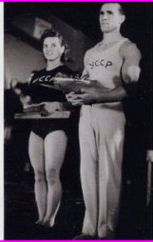

Nina Bocharova (USSR)
1952 Olympic AA Silver Medalist
1952 Olympic B Champion

Medal Total
Olympic Games:
2 Gold, 1 Silver
World Championships: 1 Gold
Nina (shown above with Viktor Chukarin) was born on September 24, 1924 in Poltava (Ukrainian SSR). She trained at Stroitel in Kiev. Nina was the absolute champion of the USSR in 1949 and 1951.
Competition Results
1948
USSR Championships: 5th AA
1949
Match of the Best Gymnasts: 7th AA
USSR Championships: 1st AA
USSR Team Championships: 5th AA, 1st B
1950
HUN-USSR Dual Meet: 1st Team, 5th AA, 2nd B
USSR Championships: 5th AA
1951
USSR Championships: 1st AA, 1st UB, 1st B
1952
Olympic Games: 1st Team, 2nd AA, 1st B, 4th B,
6th V
USSR-HUN Dual Meet: 1st Team, 4th AA
1953
USSR Team Championships: 3rd AA
World Youth Festival: 1st Team, 1st AA, 1st UB, 2nd UB, 4th V
1954
International Meet in Leningrad: 6th AA
World Championships: 1st Team, 6th AA, 4th UB, 6th B
1956 This page was created on September
06, 2004 and was last updated on July 05, 2021.
USSR Championships: 1st Team, 4th B
USSR Cup: 5th AA, 3rd UB
© Gymn Forum